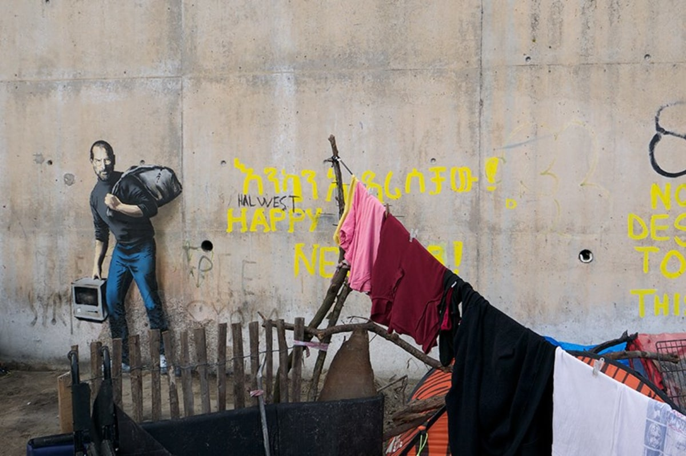

Place and Displacement Final Draft
For my piece, I wanted to focus on the themes of migration, identity, and perception,
how people coming from other places are viewed, and how conversations around them are often framed.
In particular, I was inspired by the piece “Son of a Migrant From Syria” by Banksy, seen below.
This is an excellent work to show place and displacement because of how it comments on migration in a fairly direct way.
Here the “son of a migrant” is Steve Jobs, a very well known, and very successful person.
In particular, I was struck by how it humanizes immigrants by referencing a very recognizable figure.
This prompts the viewer to reconsider their own stance on how they view people from other countries,
and how we shouldn’t just view these individuals as a “son of a migrant,” but as people that can have a huge impact, and do great things.
I decided however, to go in almost the exact opposite direction to make the same point.
I wanted to emphasize the dehumanization by taking it to its logical extreme.
Here, the two immigrants are seen as nothing more than a collection of statistics and data points,
something that happens often in conversations about immigration. In this unit,
we discussed how immigration affects identity, as people’s view on themselves often changes when they are in another country,
or around different people. I wanted to highlight that by dehumanizing immigrants, the identity we are giving them is also inhuman.
An Element of Art I utilized in particular was Shape, in the form of the outline of the two figures.
Even though I intentionally dehumanized them, their shape clearly shows that these are people, probably a parent and child.
This quickly allows the viewer to understand that these are actual people despite the fact that there is little other detail to show that.
The other Element of Art I used was type, as the main body of both figures is nothing but text and numbers.
This is able to convey how immigrants are often characterized as nothing more that a collection of data, instead of actual people.
The old saying is that “a picture is worth a thousand words,” so by making the figures nothing but text, they are reduced to a mere fraction of who they actually are.
Here is an image of the open Illustrator project:
The peice I mentioned in my write-up:

Banksy, Son of a Migrant From Syria, 2015. Photograph by NBC News.
https://www.nbcnews.com/tech/tech-news/banksy-paints-son-migrant-syria-steve-jobs-refugee-camp-n478611
Old and New Final Draft

For my piece, I choose to make something inspired by the work of Alexey Kondakov,
who superimposes old figures into a modern urban environment. I wanted to focus more
on the contrast in two urban environments however, juxtaposing an old city and a modern one.
As you can see, the right side of the piece depicts a modern city, and it is largely
dominated by the road, cars, and advertisements. The left side, however, is full of
people buying and selling, walking around, or even just sitting and enjoying the environment.
What I wanted to highlight in particular was how removed we have become from our own environment,
as we have designed our cities for cars rather than people.
One principle I worked on incorporating in particular was that of Movement,
how the eye scans the work. I wanted to have the older side stand out a bit more by making it closer,
and take up more of its side of the screen, which attracts the viewer's attention immediately.
Then the top of the buildings and the stone steps act as a funnel to move the eye to the center of the picture,
then following the busy middle to the stores on the right. The last thing the viewer should see
is the large blank areas in the top and bottom of the right side, contrasting with all the busyness
around it, which should hopefully highlight how much is lost with our modern city design. This leads
the viewer from the old to the new, and helps to emphasize the point I am trying to make with this piece.
In addition, while the empty space might make it unbalanced in terms of the weight of objects,
I did a lot of work trying to make the colors of the two pieces match, to add some harmony between the two sides.
Here is an image of the open photoshop project:

The two images I used in this piece, and links to them are below:

Alawi, Munir. Jerusalem Old City Street. 2016. fineartamerican, https://fineartamerica.com/featured/jerusalem-old-city-street-munir-alawi.html

Unknown, StrongTowns, https://images.squarespace-cdn.com/content/53dd6676e4b0fedfbc26ea91/1519937324981-77MBM7RN4HDJ8N0MMZA3/7stroad+with+walking+person.jpg?content-type=image%2Fjpeg